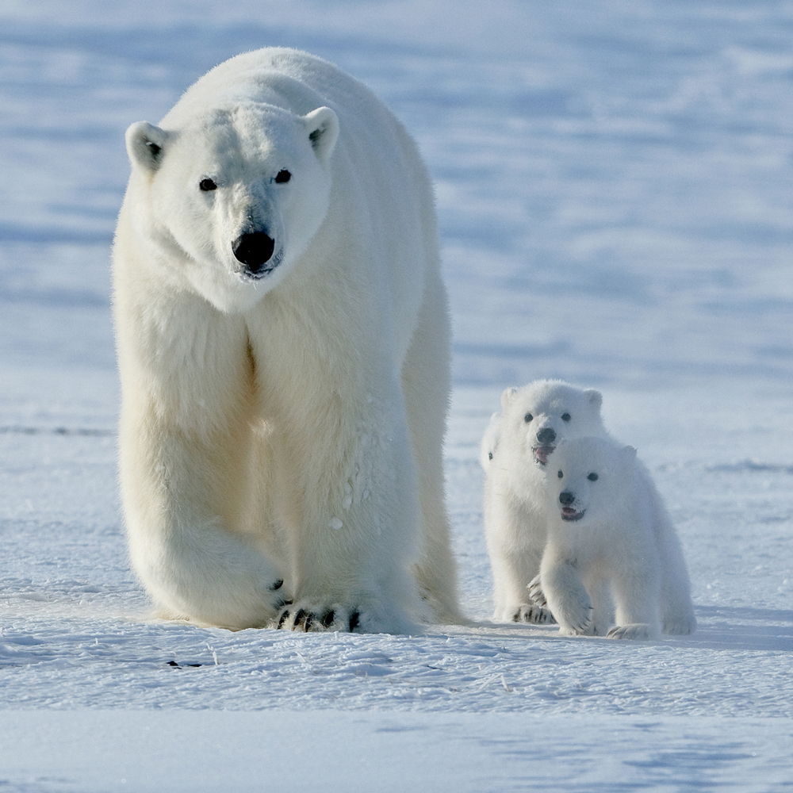
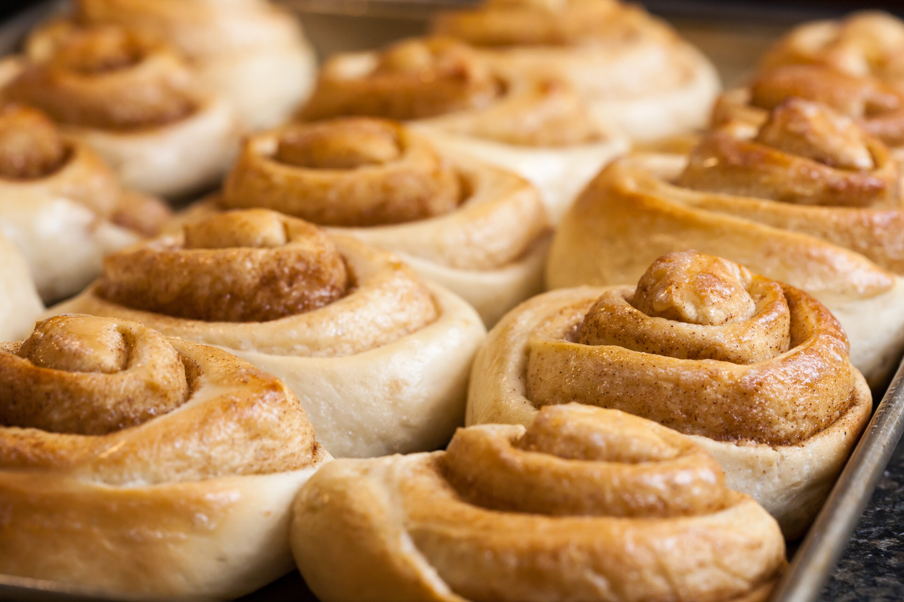

Студенты Социально-экономического института СГТУ имени Гагарина Ю. А. победили в конкурсе предпринимательских проектов, который провели в контексте ежегодной научно-практической конференции «Перспективы развития предпринимательства в молодёжной среде».
Студентки СЭИ СГТУ Анастасия Исакина и Виктория Торак с проектом «Caseificio» заняли 3 место в конкурсе и получили денежный приз в размере 50 000 рублей на продвижение проекта. Конференция прошла на платформе molodezh-nacproject.ru. Открытым голосованием и решением экспертного жюри определили победителей – авторов самых интересных бизнес-проектов.
Научно-практическая конференция «Перспективы развития предпринимательства в молодежной среде», организована с участием ООО «Региональный ресурсный центр» совместно с Министерством экономического развития Саратовской области и региональном отделением «Опора России», в рамках регионального проекта «Популяризация предпринимательства».
Исходная новость
Страница 2

